Engine Front Cover Prep and Applying RTV Sealant
Engine Front Cover - Removal - Surface Preparation - Removing and Applying RTV Sealant - Installation1. Drain the engine coolant. Refer to Cooling System Draining and Filling in SI.
Notice
It is critical that this Step is performed as outlined in order to reduce the possibility of the REMAINING engine coolant entering the oil pan when the front cover is being removed.
2. Position a suitable container under the water pump to collect any remaining engine coolant.
Remove the water pump. Refer to Water Pump Removal in SI.
3. Remove the engine front cover. Refer to Engine Front Cover Replacement in SI.
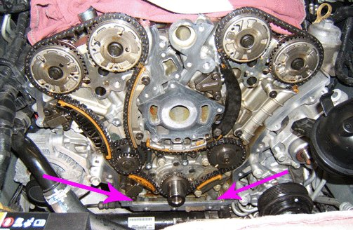
4. Insert a piece of cardboard at the front of the oil pan in the area shown to prevent any contaminants and debris from falling into the oil pan.
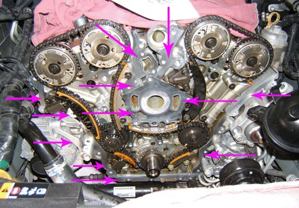
5. Using the tool or tools as outlined in this bulletin, carefully clean the front cover sealing surfaces on the engine.
6. Clean out any debris from the bolt holes for the front cover fasteners in the engine.
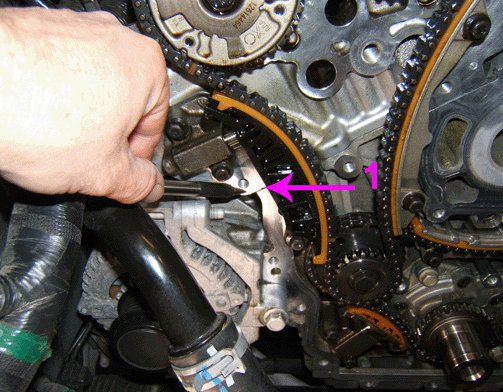
7. Clean out any debris from the T-joint (1) where the left side of the cylinder head meets the engine block.
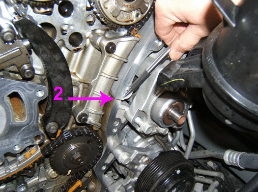
8. Clean out any debris from the T-joint (2) where the right side of the cylinder head meets the engine block.
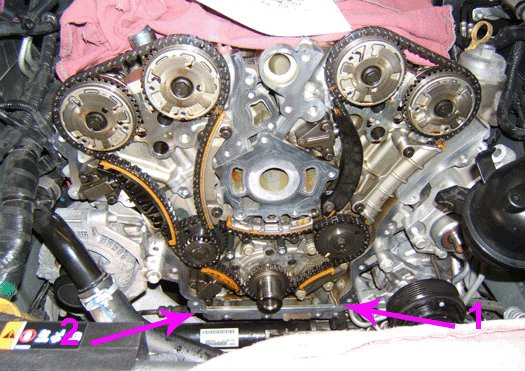
9. Clean out any debris from the T-joint (2) where the left side of the oil pan meets the engine block.
10. Clean out any debris from the T-joint (1) where the right side of the oil pan meets the engine block.
11. Spray GM Low VOC Cleaner, P/N 19287401 (in Canada, P/N 88901247) or an equivalent, on the mating surfaces of the engine side for the front cover and allow it to soak in for 5 minutes.
12. Wipe the front cover mating surfaces on the engine with a folded lint free shop cloth. Rotate the shop cloth until there are no more visible signs of contamination on the cloth.
13. Spray GM Low VOC Cleaner, or an equivalent, on the mating surfaces of the front cover and allow it to soak in for 5 minutes.
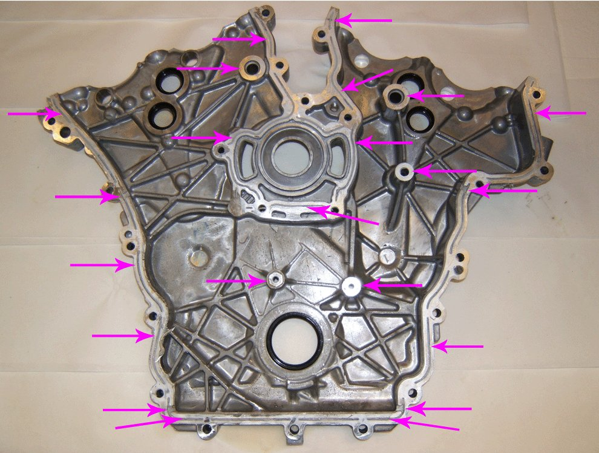
14. Carefully clean the front cover sealing surfaces and grooves.
15. Clean out any debris from the bolt holes for the front cover fasteners.
16. Drain and wipe the remaining oil from the front cover.
17. Dry the front cover with compressed air.
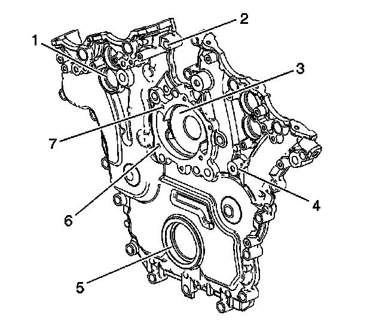
18. Inspect the exterior of the front cover for the following conditions:
- Damage to the camshaft position actuator valve oil seal bores (1).
- Damage to any bolt holes (2).
- Damage and/or corrosion to the engine coolant passage (3).
- Dents or damage to the exterior (4).
- Damage to the crankshaft front oil seal bore (5).
- Gouges or damage to the water pump sealing surfaces (6).
- Damage to the water pump bolt hole threads (7).
• If any of the above conditions are found, repair or replace the front cover as necessary.
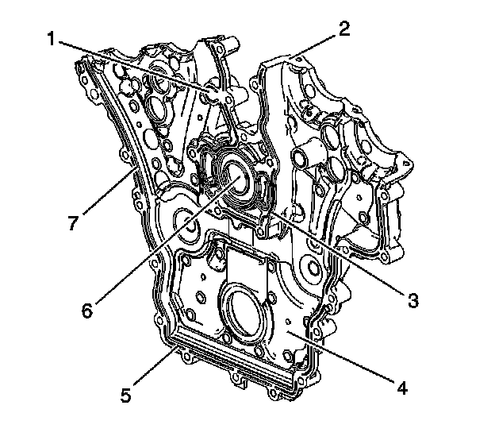
19. Inspect the interior of the front cover for the following conditions:
- Damage to any bolt holes (1).
- Gouges or damage to the cover sealing surfaces to the engine block (7), oil pan (5) and camshaft covers (2).
- Gouges or damage to the water pump seal area (3).
- Loose or damaged deadener plates (4).
- Damage and/or corrosion to the engine coolant passage (6).
- Damage to the crankshaft front oil seal bore.
- Gouges or damage to the O-ring sealing areas.
• If any of the above conditions are found, repair or replace the front cover as necessary.
Notice
Wear Gloves. After the final cleaning with GM Low VOC Cleaner and before reassembly, DO NOT touch the cleaned surfaces with your bare hand. The oils from your skin WILL CONTAMINATE the surfaces and prevent proper bonding of the new RTV sealant.
20. Clean the sealing surface prior to reassembly by spraying GM Low VOC Cleaner, on a folded lint free shop cloth. Wipe the mating surfaces and rotate the shop cloth until there are no more visible signs of contamination on the cloth.
21. After the final cleaning of the parts, allow 5 minutes for the components to dry before applying new RTV sealant.
22. Remove the cardboard from the front of the oil pan.
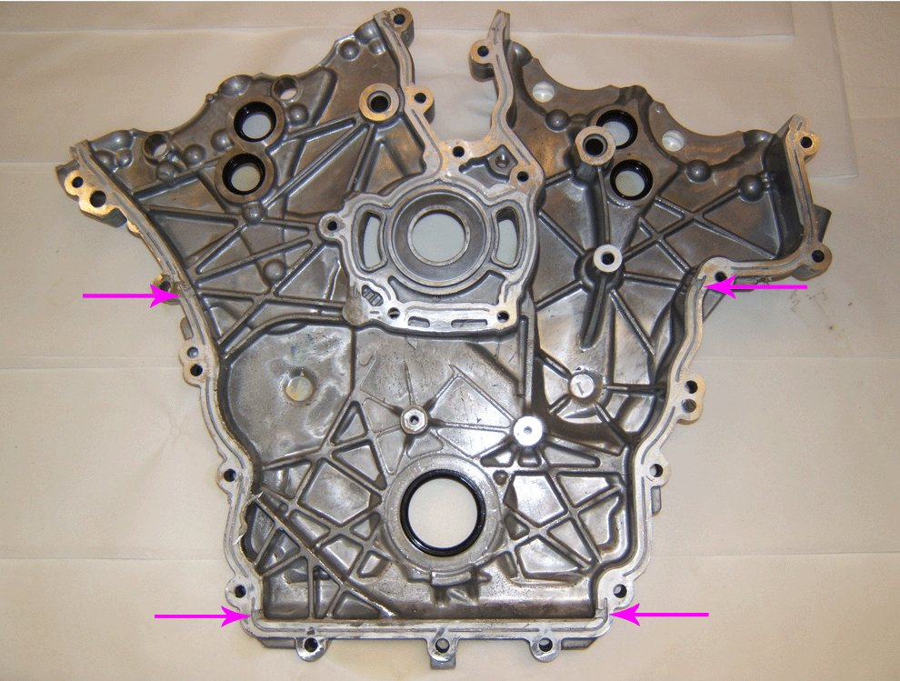
Notice
THIS STEP IS CRITICAL.
Oil leaks at the T-joints are one of the most common conditions encountered.
23. Apply a 5 mm bead of RTV sealant to the T-joints on the front cover in order to ensure that there is enough sealant to extend into the joint.
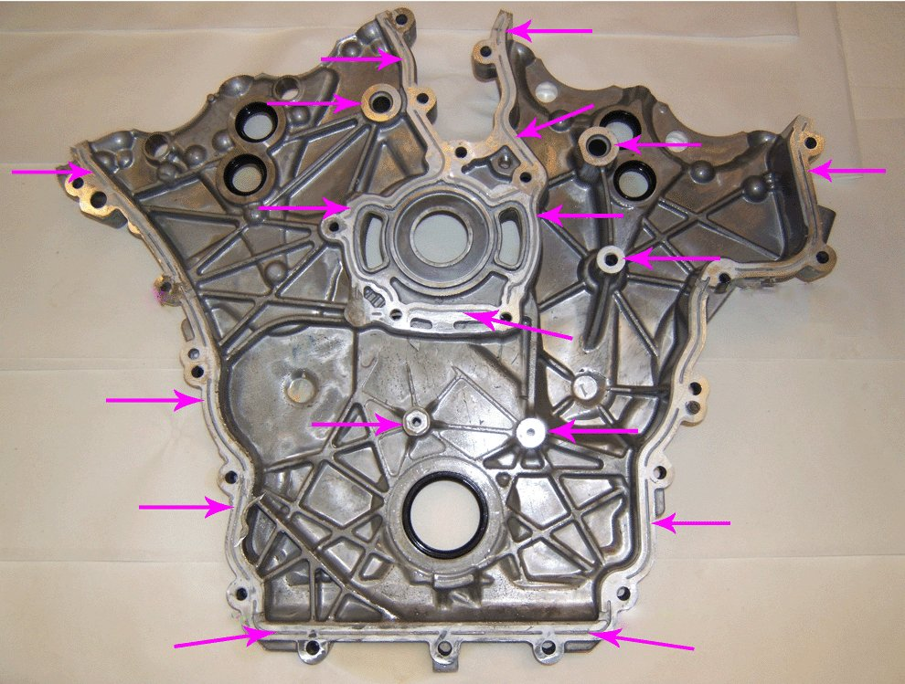
24. Apply a 3 mm bead of RTV sealant to the remaining front cover sealing surfaces.
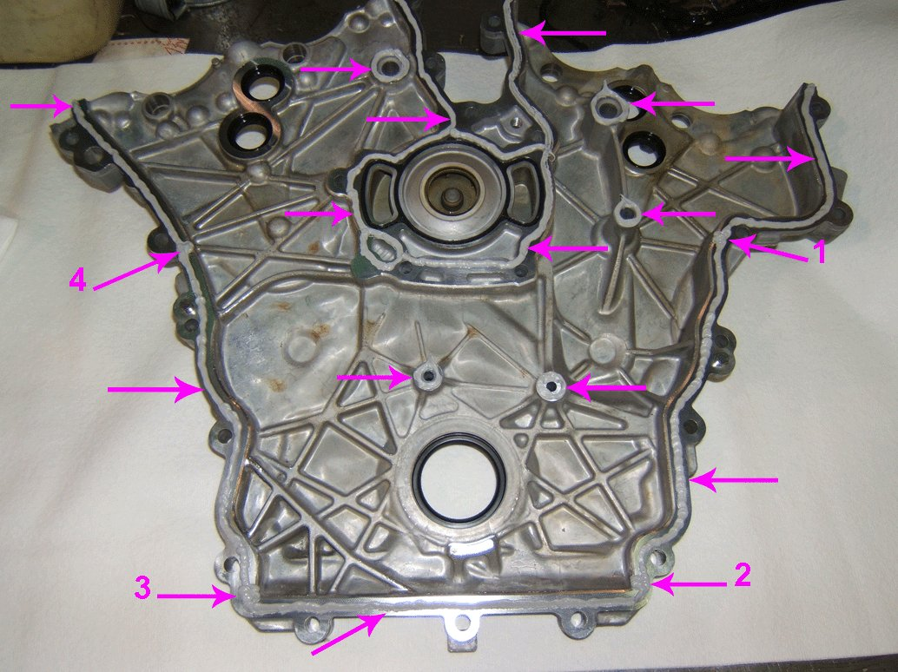
25. This is a typical view of the proper application of the RTV sealant to the front cover, with a 5 mm bead of RTV sealant to the T-joints (1, 2, 3, 4) and a 3 mm bead of RTV sealant to the rest of the sealing surfaces.
Notice
The front cover must be installed BEFORE the RTV sealant is allowed to "skin over" or the sealant will not adhere.
26. Install the front cover to the engine. Refer to Engine Front Cover Replacement in SI.
27. Install the water pump. Refer to Water Pump Installation in SI.
28. Complete the repair. Refer to Engine Front Cover Replacement in SI.
Snap-On is a Registered Trademark of Snap-On Incorporated
Tube Grip is a Registered Trademark of Valco Cincinnati Inc.
MaxiFlex is a Trademark of ATG Ceylon (PVT) Limited